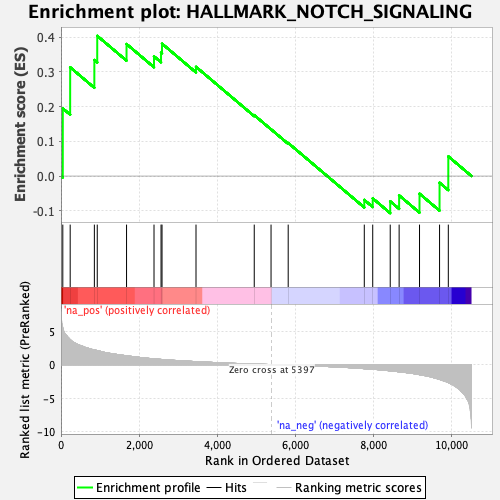
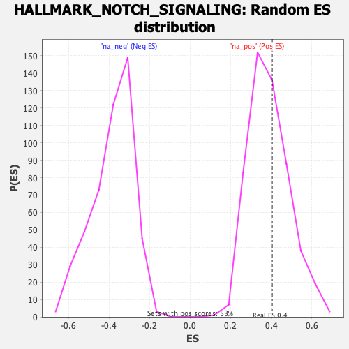

| Dataset | qlf.KOd4vsWTd4_gsea_score |
| Phenotype | NoPhenotypeAvailable |
| Upregulated in class | na_pos |
| GeneSet | HALLMARK_NOTCH_SIGNALING |
| Enrichment Score (ES) | 0.40346056 |
| Normalized Enrichment Score (NES) | 1.039644 |
| Nominal p-value | 0.39848197 |
| FDR q-value | 0.3623681 |
| FWER p-Value | 1.0 |

| SYMBOL | RANK IN GENE LIST | RANK METRIC SCORE | RUNNING ES | CORE ENRICHMENT | |
|---|---|---|---|---|---|
| 1 | PRKCA | 46 | 5.457 | 0.1946 | Yes |
| 2 | NOTCH2 | 235 | 3.735 | 0.3130 | Yes |
| 3 | APH1A | 854 | 2.192 | 0.3340 | Yes |
| 4 | KAT2A | 928 | 2.095 | 0.4035 | Yes |
| 5 | SAP30 | 1678 | 1.315 | 0.3800 | No |
| 6 | RBX1 | 2381 | 0.860 | 0.3445 | No |
| 7 | DTX4 | 2561 | 0.770 | 0.3555 | No |
| 8 | CUL1 | 2586 | 0.763 | 0.3810 | No |
| 9 | PSEN2 | 3456 | 0.444 | 0.3144 | No |
| 10 | PPARD | 4947 | 0.080 | 0.1752 | No |
| 11 | FBXW11 | 5377 | 0.005 | 0.1345 | No |
| 12 | MAML2 | 5816 | -0.066 | 0.0952 | No |
| 13 | DTX1 | 7764 | -0.596 | -0.0687 | No |
| 14 | PSENEN | 7980 | -0.686 | -0.0642 | No |
| 15 | DTX2 | 8428 | -0.932 | -0.0728 | No |
| 16 | LFNG | 8656 | -1.063 | -0.0557 | No |
| 17 | ST3GAL6 | 9178 | -1.495 | -0.0508 | No |
| 18 | ARRB1 | 9691 | -2.205 | -0.0192 | No |
| 19 | NOTCH1 | 9915 | -2.659 | 0.0565 | No |
